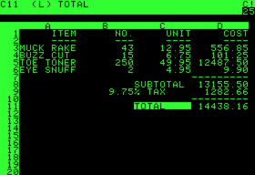

Introducción a la estadística industrial y la ciencia de datos utilizando R y Microsoft Excel
Manual para la Formación Profesional
Prefacio
Este libro trata sobre la enseñanza de algunos métodos básicos de la estadística y la moderna ciencia de datos y su aplicación al entorno industrial. Está concebido de forma práctica con multitud de ejemplos, no sólo industriales, con el objetivo de mostrar los métodos cuantitativos de análisis, y también el razonamiento necesario para dar sentido a los resultados presentados por las herramientas de análisis de datos.
El objetivo del libro es acercar a los estudiantes de la Formación Profesional al uso de las herramientas de análisis de datos industriales. El entorno de la industria 4.0 produce un enorme y constante flujo de datos como consecuencia tanto a la implantación de sistemas de captura automáticos como al aumento de la tecnificación de los puestos de trabajo; se requiere por parte de los profesionales industriales que sean capaces de analizar esta enorme cantidad de datos para transformarlos en información para la decisión. En la empresa industrial actual, son los ingenieros y técnicos de planta, y no estadísticos o ingenieros informáticos, quienes participan diariamente en la presentacion y discusion de los datos y en la toma de decisiones operativas, tanto en los equipos de trabajo como ante la Dirección. Por esta razón, considero necesario proporcionar a los estudiantes de la Formación Profesional un conocimiento suficiente de los conceptos, herramientas y métodos del análisis de datos, así como de las técnicas básicas de presentación y comunicación de la información.
La enseñanza de los conceptos estadísticos está, casi siempre, a cargo de profesores con una gran formación en matemáticas. Estos profesores suelen identificar la comprensión de los conceptos estadísticos con su comprensión matemática. Sin embargo, cuando enseñamos estadística industrial, debemos hacer énfasis tanto en las ideas y la comprensión de los conceptos como en su utilización práctica, y reconocer que el razonamiento matemático no es el único camino para la comprensión conceptual.
La práctica de la estadística requiere buen juicio y sentido común. Dado que el buen juicio se desarrolla con la experiencia, un curso de iniciación debe presentar unas guías claras de aplicación de los métodos, y no dar por supuestas unas exigencias excesivamente altas sobre la capacidad de juicio analítico de los estudiante; no sería un planteamiento razonable. Con el fin de desarrollar esta capacidad de juicio analítico he introducido explicaciones detalladas en la mayor parte de los ejemplos. En todos los casos, los ejercicios requerirán del estudiante no sólo una resolución numérica, sino el uso del juicio analítico y la explicación verbal (o escrita) de las decisiones tomadas y conclusiones realizadas. Creo que este planteamiento será mucho más beneficioso a largo plazo que limitarse a una simple resolución numérica.
Mi experiencia industrial me ha mostrado que en las situaciones reales, sobre el terreno, la comprensión práctica de los conceptos es más importante que su rigurosa formulación matemática. Por esta razón, en el desarrollo del contenido del libro he insistido más en la forma de aplicar las herramientas y entender los análisis que en el conocimiento formal de las fórmulas estadísticas y su deducción matemática. He hecho especial hincapié en la utilización de herramientas sencillas, sobre todo gráficas, que casi siempre son una ayuda para comprender la información contenida en un conjunto de datos. El objetivo es proporcionar al estudiante las bases de la metodología del análisis de datos y del análisis estadístico, y cómo puede aplicarse a la resolución de problemas técnicos concretos, más que el conocimiento de la teoría matemática de la estadística.
He evitado las explicaciones formales sobre temas estadísticos cuando no son indispensables para su aplicación práctica. Así, por ejemplo, al explicar la media de un conjunto de datos considero más importante entender el concepto físico de “centro de gravedad” que los conceptos estadísticos de esperanza matemática, que no se tocan en este texto. En este sentido, he intentado que el alumno diferencie bien el concepto de “en qué consiste” un estadístico del concepto práctico de “cómo se calcula”; entender lo que significa un valor central concreto aplicado a un conjunto de números y comprender la diferencia entre el concepto y su fórmula de cálculo es fundamental para entender en qué situación debe usarse uno u otro estadístico.


Un curso de introducción a la estadística y análisis de datos industriales debe ser ante todo práctico y orientado a su aplicación en el entorno industrial real. Los principales temas de trabajo estadístico en la industria tienen que ver con la captura de datos, su almacenamiento y su depuración, su descripción utilizando gráficos, la inferencia (intervalos de confianza y tests), la construcción de modelos explicativos, el diseño de los experimentos industriales, el control estadístico de la calidad y la exposición y presentación de resultados. Dado el alcance limitado de este libro, algunos de estos temas se tratarán de forma muy ligera, y necesitarán de un estudio posterior si el alumno tiene interés en profundizar en ellos. A pesar de que los temas más especializados puedan ser importantes en algunas aplicaciones específicas, no preparan al estudiante para lo que se va a encontrar en el terreno en la mayor parte de las ocasiones. En cambio, la resolución de problemas en equipo en un entorno de aprendizaje dinámico enfrentándose a problemas exigentes, y el desarrollo de las habilidades de análisis, de síntesis y de comunicación, tendrán un impacto mucho más positivo.
He intentado mostrar la necesidad de que los estudiantes comprendan y apliquen el método científico en el entorno industrial, y no sólo apliquen un recetario de procedimientos de manera automática. Es mucho mas importante la comprensión y adecuada utilización del método científico y de las herramientas y gráficos básicos, antes que la aplicación rutinaria y mecánica de determinadas fórmulas matemáticas o métodos sofisticados y complejos que el alumno puede no comprender en toda su profundidad.
Las industrias líderes destacan por la aplicación intensiva de métodos sofisticados, tales como Six Sigma, Lean Manufacturing, diseño robusto de productos, y otros que hacen un uso intensivo de los datos, tanto de los obtenidos en producción como de los obtenidos en la realización de experimentos bien diseñados. La mejora de la competitividad en estas empresas no se debe tanto a la aplicación de unos u otros métodos, como al desarrollo del juicio analítico de sus equipos y a la aplicación de lo aprendido a la mejora continua de los procesos industriales. Veremos que la experiencia y el conocimiento tecnológico de estos procesos son fundamentales para el desarrollo del buen juicio analítico, y, en consecuencia, para la buena interpretación de los resultados que se obtienen con las herramientas estadísticas y de análisis .
A quién va dirigido este libro
El libro está orientado a completar la formación técnica de los estudiantes de Formación Profesional, en las especialidades relacionadas con la actividad productiva industrial. También creo que será de utilidad para los técnicos industriales en activo que no han tenido una adecuada formación en estas metodologías, y que han encontrado dificultad para lanzarse a su aprendizaje mientras desarrollan so actividad profesional. En todos los casos, el aprendizaje requerirá de un esfuerzo que quizás será mayor en los estudiantes que no tengan una base mínima en álgebra y cálculo. En estos casos, el trabajo en equipo y la discusión abierta entre compañeros y con los profesores ayudará a la comprensión de los conceptos.
Organización del libro
El capítulo 1 proporciona una introducción general al pensamiento estadístico y su aplicación industrial. Introduce también algunos conceptos sobre la ética en análisis de datos y una reflexión sobre la honestidad del investigador o analista. Se introduce también el concepto actual de repetibilidad en la elaboración de los informes estadísticos.
El capítulo 2 trata fundamentalmente de la forma de recoger los datos y su almacenamiento. Introduce el concepto de datos ordenados o arreglados (tidy data), que resulta fundamental para las fases posteriores de análisis.
En el capítulo 3 se introducen los métodos básicos para resumir tablas de datos y la presentación mediante el uso de gráficos.
El capítulo 4 introduce el concepto de probabilidad, así como las distribuciones de probabilidad, necesarias para la construcción de los tests de hipótesis y, en general, de la estadística inferencial. Este es un contenido que se presenta de forma breve y sobre todo práctica.
En el capítulo 5 se presentan los métodos para detectar la relación entre dos variables, haciendo énfasis en los métodos gráficos, y se discute las diferencias entre correlación y causalidad.
El capítulo 6 introduce de manera sencilla el análisis de la varianza, necesario para métodos importantes en la industria como el control de la precisión analítica, que se trata en el capítulo siguiente.
El capítulo 7 trata de la medida de la precisión analítica. Resulta sorprendente la cantidad de laboratorios que dan soporte analítico a procesos productivos de gran impacto económico en la vida de la empresa, sin realizar nunca un autocontrol sobre el nivel de precisión de sus análisis. En este capítulo se hace una presentación básica del tema con el objetivo de que resulte útil y práctica.
El capítulo 8 presenta una de las aplicaciones más importantes de la estadística en el entorno industrial, el control estadístico de procesos. Dada la importancia de este capítulo, se refuerza su contenido con numerosos ejemplos y casos prácticos, y se incluye un caso extenso para su análisis.
En el capítulo 9 se hace una introducción al diseño de experimentos. La utilidad de esta técnica es primordial para el industrial, sobre todo para el área de I+D y el diseño de productos. Dado que esta técnica puede ser muy compleja en su aplicación real, se facilitan enlaces a otros recursos, como cursos, que serán útiles a los que quieran profundizar más.
Finalmente, en el capítulo 10 se presentan las líneas de lo que hemos llamado pensamiento estadístico. Se presentan también algunas aplicaciones prácticas de la estadística en el entorno industrial, como Six Sigma, y se analizan en detalle algunos casos interesantes, que pueden servir como colofón al libro.
Cómo usar el libro
El diseño del libro se inspira en las recomendaciones de Edward R. Tufte, con márgenes amplios que incluyen notas, referencias y algunos elementos gráficos.
He intentado que cada capítulo sea lo más autocontenido posible de forma que se facilite la organización pedagógica por temas, no obstante, hay algunos contenidos que pueden necesitar contenidos de los capítulos anteriores, por lo que se sugiere estudiarlo en el orden presentado.
El libro es eminentemente práctico, con numerosos ejercicios; la resolución puede ser individual o en equipo.
Algunos recuadros utilizan códigos de color para indicar el objetivo de la información que contienen. Básicamente, los colores utilizados son:
Además se incluyen diferentes tipos de avisos cada vez que se introduce algún concepto que es necesario resaltar.
En este formato se indican cuestiones importantes
En este formato se indican cuestiones a las que hay que prestar especial atención o que pueden inducir a error
Uso del ordenador y el software estadístico
En la práctica diaria, los técnicos industriales usan los ordenadores para almacenar y visualizar los datos de producción, para solucionar problemas mediante análisis estadísticos, y para presentar sus resultados de forma gráfica. De la misma forma que en el entorno industrial, en este libro se utilizarán también los ordenadores de forma habitual, y por esta razón es imprescindible que los estudiantes tengan acceso individual a un ordenador en el que esté instalado el software recomendado, y que se acostumbren a utilizarlo para resolver los problemas y casos planteados como ejercicios prácticos, individualmente y en grupo.
Las hojas de cálculo y la programación en R.
La hoja de cálculo es una herramienta omnipresente hoy día en todos los ámbitos de trabajo y educativos. Desde su aparición, en 1979, ha contribuido a la gestión de miles de empresas, se ha utilizado de manera general en análisis de datos y sus gráficos se han utilizado y se utilizan en publicaciones e informes de todas clases. En la década de los años 80 del pasado siglo, la hoja de cálculo Lotus 1-2-3 fue la aplicación más utilizada en los ordenadores IBM-PC y compatibles, y consiguió facturaciones millonarias para la empresa matriz. Lotus 1-2-3 dominó el mercado hasta la aparición de Microsoft Windows a finales de los años 80; el nuevo sistema operativo favoreció la implantación de Excel, que desde entonces se convirtió en la hoja de cálculo dominante.

El estudiante que se incorpora a una empresa, sea en un laboratorio o en una planta de producción, se va a encontrar muy pronto delante de una hoja de cálculo, y debe saber cómo utilizarla correctamente. Actualmente, lo más probable es que esa hoja de cálculo sea Microsoft Excel, aunque hay otras alternativas posibles, como Google Sheets, Apple Numbers, OpenOffice Calc y algunas más. La gran dominancia en el mercado de Microsoft Excel ha hecho que todas estas herramientas sean totalmente compatibles o tengan modos de compatibilidad con Excel. Por esta razón, este libro se basa en la utilización de Excel como hoja de cálculo y herramienta principal para el almacenamiento de datos.

A lo largo del libro se presentarán informes y gráficos obtenidos con Microsoft Excel, y también con el software estadístico R. Prácticamente todos ellos pueden ser exportados a otras herramientas, como Google Sheets, OpenOffice, Minitab o Matlab, o analizarse con otros lenguajes de programación, como Python o Julia. En realidad, el método de análisis y cómo obtener un resultado correcto son aspectos más importantes que la herramienta que se utilice para ello, por lo que queda en manos del instructor la decisión final sobre qué usar y cómo. Para facilitar este trabajo de conversión, en su caso, todo el material del libro y los datos de ejemplo están disponibles en un repositorio de GitHub.

Algunos ejercicios tienen que ver con la interpretación y presentación de los resultados. Es importante que estos trabajos se realicen en grupo y se haga énfasis en la comprensión del problema y en su correcta exposición; en los equipos industriales de hoy, la discusión de problemas y la exposición de resultados, en reuniones de trabajo o en paneles informativos a pie de planta, forma parte del trabajo diario. Estas habilidades de comunicación deben ser desarrolladas en los estudiantes de forma prioritaria.
La ventaja de R sobre Excel es que el código R, si está bien documentado, muestra cada paso realizado, y esto permite que otras personas puedan verificar el resultado y reproducirlo a partir de los datos originales, e incluso reutilizar los procedimientos. Utilizar código en vez de clicks de ratón es esencial para asegurar la reproducibilidad de los análisis de datos, 1. Por esta razón, recomiendo el uso del lenguaje R como complemento o alternativa a la hoja de cálculo, tanto para analizar como para visualizar datos. Sin embargo, como la realidad del mundo de la empresa es que los lenguajes como R están todavía poco introducidos, es inevitable mantener el uso de la hoja de cálculo; en el libro se explicarán algunas mejores prácticas, que permitirán el uso simultáneo de ambas herramientas de forma óptima.
Respecto a la programación informática, en el libro no se hace énfasis en la programación R más que como sucesión de órdenes individuales en scripts sencillos. No se busca la eficiencia computacional ni la rapidez en el cálculo, sino la comprensión de la metodología de resolución de problemas y cómo ésta se apoya en las herramientas presentadas. De la misma manera, tampoco se hace ningún uso de la programación en Excel, ya sea con macros o con Visual Basic; estos temas quedan fuera del perímetro de este libro.
Un paso en la dirección de la implantación de flujos de trabajo reproducibles es la elaboración de informes automatizados. Estos informes incluyen el código R, los comentarios del autor en forma de texto formateado en markdown, y los resultados del código. Herramientas como Quarto, o Google Colaboratory, que usa la interface Jupyter, son nuevas formas de elaborar y presentar los informes y resultados estadísticos. Estas herramientas abren posibilidades muy interesantes en la presentación de un ejercicio o un exámen escrito, ya que el alumno puede detallar perfectamente todos los pasos hasta llegar al resultado final, y facilita la revisión por sus compañeros o por el profesor a cargo de la asignatura.
Recursos adicionales y cómo usarlos
En este libro no se hace una introducción a R ni a Excel; se presupone que el alumno tiene un conocimiento básico de ambas herramientas. Si no tiene ninguna formación sobre el lenguaje R y el entorno RStudio recomiendo hacer alguna formación previa sencilla que introduzca los conceptos básicos. Datacamp tiene cursos gratuitos de introducción a \(R\); también hay cursos de formación tanto de R como de Excel en otras plataformas web como edX, Udemy y Coursera, muchos de ellos gratuitos. El Gobierno de España, dentro de una de sus iniciativas de transformación digital, la iniciativa de datos abiertos, incluye también una amplia referencia a cursos de formación sobre R.
Todos los datos presentados en los ejemplos se incluyen en hojas de cálculo que están disponibles en … También se incluyen fuentes de datos adicionales que pueden permitir plantear nuevos ejercicios.
Al final del libro se incluye una bibliografía completa.
Sobre el libro
El libro ha sido editado en Quarto. Está disponible en PDF.
Agradecimientos
El concepto de reproducibilidad, cada vez más importante, se desarrolla en el capítulo 2↩︎